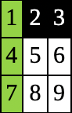
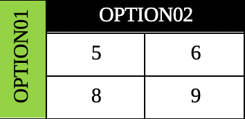

Plan de refuerzo 03¶
EVALUACIÓN: Plan de refuerzo (10 minutos)
Estudiar los temas a continuación. Se realiza examen de 5 preguntas. Si el estudiante no asiste en la fecha programada, este será evaluado la próxima vez que asista a clase.
Esquema de numeración¶
Un esquema de numeración es un sistema organizado para enumerar elementos, como títulos, subtítulos, o pasos en un documento o presentación. Sirve para estructurar la información de manera clara y jerárquica, facilitando la lectura y comprensión. Generalmente, se utilizan números arábigos, romanos o letras, combinados para indicar la relación entre los diferentes niveles de importancia.
Importancia de una portada en un documento¶
La portada es crucial porque es la primera impresión del documento.
Sirve para identificar el tema, el autor y la fecha de creación de manera clara y concisa. Además, una buena portada profesionaliza el trabajo, facilita la organización y ayuda a captar la atención del lector desde el principio.
Importancia de una tabla de contenido en un documento¶
Una tabla de contenido es importante por las siguientes razones:
Facilita la navegación: Permite a los lectores encontrar rápidamente la información que buscan, ahorrando tiempo y esfuerzo.
Organiza la información: Muestra la estructura lógica del contenido, lo que ayuda a comprender la relación entre las diferentes secciones.
Mejora la legibilidad: Hace que el documento sea más accesible y atractivo visualmente.
Aumenta la profesionalidad: Demuestra que el autor se preocupa por la claridad y la organización.
Hojas horizontales en documentos¶
A veces es necesario agregar una hoja horizontal a un documento por varias razones:
Para acomodar contenido ancho: Si hay una tabla, imagen o diagrama que es demasiado ancho para caber en una página vertical, una hoja horizontal proporciona el espacio necesario.
Mejorar la legibilidad: En algunos casos, presentar información en formato horizontal puede hacer que sea más fácil de leer y comprender, especialmente para datos complejos.
Diseño y presentación: El diseño horizontal puede ser una elección estética o estratégica para destacar ciertas secciones del documento o para crear un diseño más dinámico.
Impresión: En algunos casos, la orientación horizontal puede ser necesaria para imprimir correctamente un documento, especialmente si contiene elementos que no se ajustan a la orientación vertical.
Identificación de tablas, columnas, filas y celdas¶
Una tabla se compone de:
Columnas: Son las líneas verticales en la tabla. (Por ejemplo la columna A, B y C)
Filas: Son las líneas horizontales en la tabla. (Por ejemplo la fila 01, 02 y 03)
Celdas: Es la intersección entre una columna y una fila. Cada celda tiene un dato específico. (Por ejemplo CELDA 01, CELDA 02, CELDA 03, etc.)
Los valores de una tabla se pueden identificar así:
A1 = CELDA 01
B1 = CELDA 02
C1 = CELDA 03
. |
A |
B |
C |
|---|---|---|---|
1 |
CELDA 01 |
CELDA 02 |
CELDA 03 |
2 |
CELDA 04 |
CELDA 05 |
CELDA 06 |
3 |
CELDA 07 |
CELDA 08 |
CELDA 09 |
Importancia del formato en las tablas¶
Las tablas son importantes porque permiten organizar la información de tal forma que sea analizada para posterior toma decisiones.
Los campos en una tabla son celdas que describen el tipo de información que tendrán.
En algunas ocasiones estas celdas se fusionan para que la tabla tenga un mejor aspecto y comprensión de la información.
Tablas con formato
{kind=link}

Tabla sin celdas fusionadas¶
{kind=link}

Tabla con celdas fusionadas¶
Variación de cambio¶
La variación de cambio es un porcentaje positivo o negativo que mide que tanto varió un valor anterior con un valor actual. La fórmula es:
Por ejemplo:
En anterior mes se tuvieron ganancias de $1,000,000
En presente mes se tuvieron ganancias de $2,000,000
Aplicando la formula se tiene:
Por tanto la variación fue de un 100% a favor de tener más ganancias.